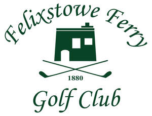

Trade Mark Journal No.2025/032 8 August 2025
UK00004233379 14 July 2025 (9,16,18,25,26,28,35,36,41,43)

- Class 9
- Computer apps; Rangefinders for golf; Apparatus for measuring the speed of golf swing; Databases relating to golfing matters; Sunglasses; Mouse pads; Protective covers for tablet computers; Downloadable computer application software for mobile phones, namely, software for providing information related to golf; Downloadable computer application software for mobile phones, portable media players, and handheld computers, namely, software for providing golf league player statistics and team information; Downloadable posters.
- Class 16
- Golf score cards; photographs; stationery; instructional and teaching material (except apparatus); books; booklets; pens; pencils; pencil cases; the aforementioned items relating to the game of golf.
- Class 18
- Leather and imitations of leather; animal skins; hides; trunks and travelling bags; umbrellas, parasols and walking sticks; whips, harness and saddlery; backpacks; bags for shopping; pocket wallets; rucksacks; satchels; sports bags, other than shaped to contain specific apparatus; umbrella covers.
- Class 25
- Clothing, footwear, headgear; sports clothing; articles of clothing for golfers; golf clothing, other than gloves; golf shirts; golf trousers; golf skirts; golf shorts; golf caps; golf footwear; golf shoes; gym clothing; polo shirts; T-shirts; sweatshirts; sweatbands; wristbands; headbands; vests; tank tops; stringer vests; hoodies; leggings; tights; sweat pants; underclothing; underwear; bras; sports bras; knickers; sweatshirts; casual clothing; t-shirts; shirts; joggers; track pants; tracksuits; outwear; jackets; coats; shorts; knitwear; cardigans; sweaters; jumpers; dresses; waterproof jackets and trousers for playing golf; shoes; sports shoes; boots; trainers; sneakers; running shoes; cleats for attachment to sports shoes; hats; baseball caps; caps; snapbacks; visors; sports headgear [other than helmets]; gloves; belts.
- Class 26
- Badges; ornamental novelty buttons; lace and embroidery, ribbons and braid; buttons, hooks and eyes, pins and needles; artificial flowers.
- Class 28
- Games, toys and playthings; gymnastic and sporting articles not included in other classes; articles for playing golf; fitted protective covers specially adapted for golf clubs; golf bags; golf balls; golf ball retrievers; golf ball markers; golf clubs; golf club shafts; golf club grips; golf club heads; golf ball markers; golf bag travel covers; golf club covers; golf putters; golf apparatus; golf games; golf practice apparatus; golf practice apparatus’ golf training aids; golf practice nets; golf swing alignment apparatus; golf tees; golf training aids; head covers for golf clubs; handles for golf clubs; golf gloves; golf flags; golf mats; golf irons; golf tees; golf bags; golf bag carts; golf bag trolleys; trolley bags for golf equipment; stands for golf bags; sports bags, shaped to contain apparatus used in playing sports; trolley bags for golf equipment; playing cards.
- Class 35
- Advertising; business management; business administration; office functions; promotional advertising and marketing relating to the game of golf; publication of publicity texts and materials; business management of sporting clubs; promoting the goods and services of others by arranging for sponsors to affiliate their goods and services with sports competitions; administration of membership schemes; provision of an on-line marketplace for buyers and sellers of goods and services; retails services in connection with the sale of Computer apps, Rangefinders for golf, Apparatus for measuring the speed of golf swing, Databases relating to golfing matters, Sunglasses, Mouse pads, Protective covers for tablet computers, Downloadable computer application software for mobile phones, namely, software for providing information related to golf, Downloadable computer application software for mobile phones, portable media players, and handheld computers, namely, software for providing golf league player statistics and team information, Downloadable posters, Clothing, footwear, headgear, sports clothing, articles of clothing for golfers, golf clothing, other than gloves, golf shirts, golf trousers, golf skirts, golf shorts, golf caps, golf footwear, golf shoes, gym clothing, polo shirts, T-shirts, sweatshirts, sweatbands, wristbands, headbands, vests, tank tops, stringer vests, hoodies, leggings, tights, sweat pants, underclothing, underwear, bras, sports bras, knickers, sweatshirts, casual clothing, t-shirts, shirts, joggers, track pants, tracksuits, outwear, jackets, coats, shorts, knitwear, cardigans, sweaters, jumpers, dresses, waterproof jackets and trousers for playing golf, shoes, sports shoes, boots, trainers, sneakers, running shoes, cleats for attachment to sports shoes, hats, baseball caps, caps, snapbacks, visors, sports headgear [other than helmets], gloves, belts, Badges, ornamental novelty buttons, lace and embroidery, ribbons and braid, buttons, hooks and eyes, pins and needles, artificial flowers, Games, toys and playthings, gymnastic and sporting articles not included in other classes, articles for playing golf, fitted protective covers specially adapted for golf clubs, golf bags, golf balls, golf ball retrievers, golf ball markers, golf clubs, golf club shafts, golf club grips, golf club heads, golf ball markers, golf bag travel covers, golf club covers, golf putters, golf apparatus, golf games, golf practice apparatus, golf practice apparatus’ golf training aids, golf practice nets, golf swing alignment apparatus, golf tees, golf training aids, head covers for golf clubs, handles for golf clubs, golf gloves, golf flags, golf mats, golf irons, golf tees, golf bags, golf bag carts, golf bag trolleys, trolley bags for golf equipment, stands for golf bags, sports bags, shaped to contain apparatus used in playing sports, trolley bags for golf equipment, playing cards, food and beverages; g olf score cards, photographs, stationery, instructional and teaching material (except apparatus), books, booklets, pens, pencils, pencil cases, the aforementioned items relating to the game of golf; retail services in relation to leather and imitations of leather, animal skins, hides, trunks and travelling bags, umbrellas, parasols and walking sticks, whips, harness and saddlery, backpacks, bags for shopping, pocket wallets, rucksacks, satchels, sports bags, other than shaped to contain specific apparatus, umbrella covers.
- Class 36
- Charitable fund-raising services.
- Class 41
- Education; providing of training; entertainment; sporting and cultural activities; providing golf and sports facilities; arranging and organisation of sporting competitions; coordination of sporting activities; gold club services; golf tuition; organisation of sporting activities; hire of sports facilities; organisation of golfing tournaments; publication of books and texts (other than publicity texts); party and event planning; sports officiating; sports information services; hospitality services; club entertainment services; advisory, information and consultancy services in relation to the aforesaid.
- Class 43
- Restaurant and bar services; catering services; provision of conference facilities; services for providing food and drink; club services for the provision of food and drink; restaurant services incorporating licensed bar facilities; cafés; snack-bars; bistro services; canteen services; providing of food and drink via a mobile truck; self-service restaurant services; serving of alcoholic beverages; hospitality services relating to accommodation; hospitality services relating to food and drink; sporting lunches and dinners; catering services for hospitality suites; provision of event facilities and temporary office and meeting facilities; arranging of wedding receptions relating to venues, food and drink; accommodation services; temporary accommodation services; hotel services; travel agency services for booking temporary accommodation; consultancy, information and advisory services relating to all of the aforesaid services.
Felixstowe Ferry Golf Club Limited
Representative: Birketts LLP